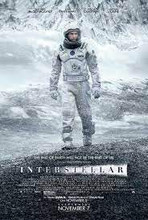

- Fans cite the power of the storyline, with its realistic moral arcs and protagonists who feel as fleshed out as any novel. Players become readily invested in Joel and Ellie's story, to the point where they may take tactically ill-advised actions because it's in character to do so.

- Nolan executes a marvelous direction that slowly but efficiently puts in place a dark world creating a necessity to save humanity. Add to that great performances from Nolan and Hathaway plus a great score from Hans Zimmer. The result is on the best science-fiction movies of all time.

- The best part about the movie was not ground-breaking but rather just great chemistry and tension between the two main characters. This along with the mystery of Mulder's sister and the cigarette smoking man added more depth. David Duchovny was amazing in that show.
- Based on the 1992 novel of the same name by Alasdair Gray, it focuses on a young Victorian woman who, after being crudely resurrected by a scientist following her suicide, runs off with a debauched lawyer to embark on an odyssey of self-discovery and sexual liberation.
- The Dune series is a landmark of science fiction. Herbert deliberately suppressed technology in his Dune universe so he could address the politics of humanity, rather than the future of humanity's technology.